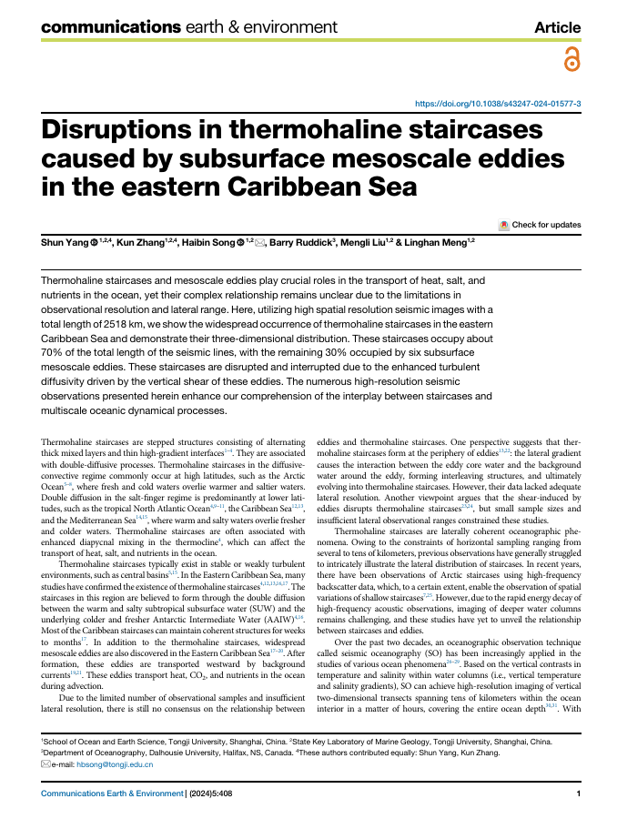
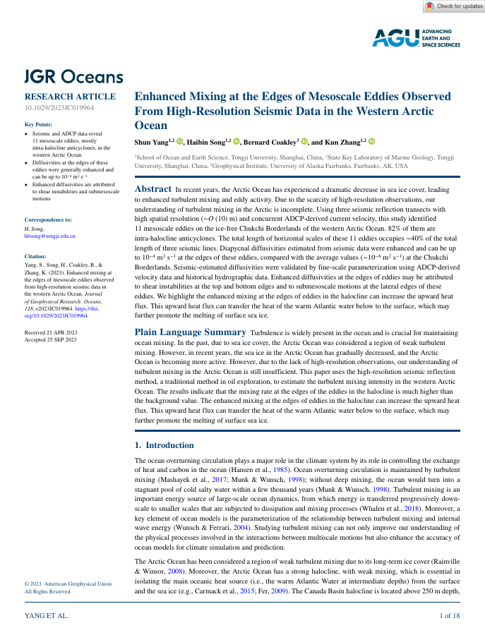
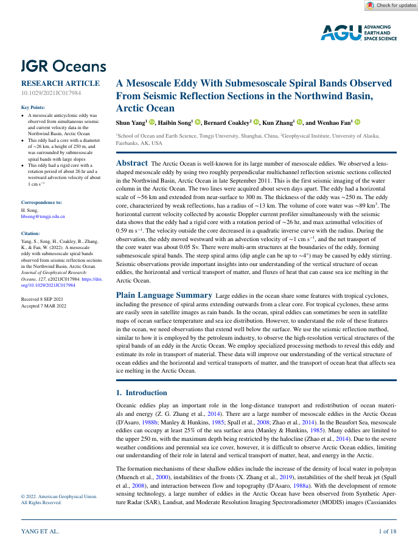
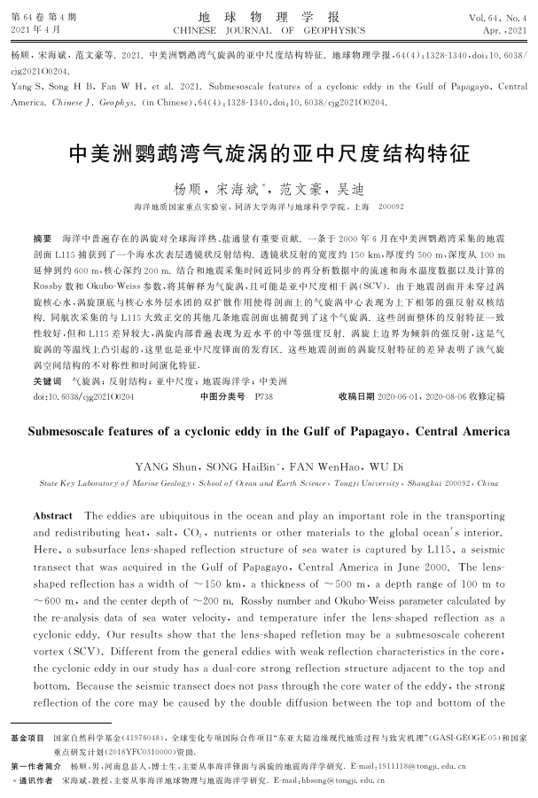

Thermohaline staircases in the Caribbean Sea
First-author article on disruptions in thermohaline staircases caused by subsurface mesoscale eddies.
Gallery
This first gallery version uses the available first-author publication PDFs as visual anchors. Dedicated seismic sections, maps, and workflow diagrams can be added later when the source figures are ready.

First-author article on disruptions in thermohaline staircases caused by subsurface mesoscale eddies.

High-resolution seismic observations of mixing near mesoscale eddy edges in the western Arctic Ocean.

Seismic reflection sections reveal a mesoscale eddy with submesoscale spiral bands in the Northwind Basin.
Seismic oceanography study of submesoscale eddy and front structures near the Antarctic Peninsula.

Study of submesoscale structures associated with a cyclonic eddy near Central America.
Engineer at Guangzhou Marine Geological Survey, working on seismic oceanography and marine geophysics.